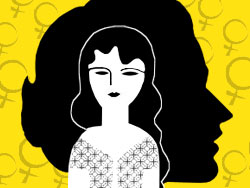
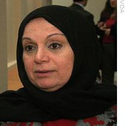
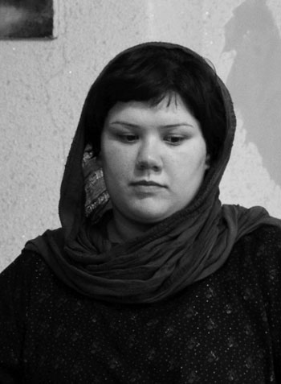
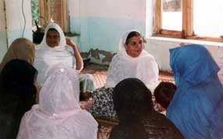
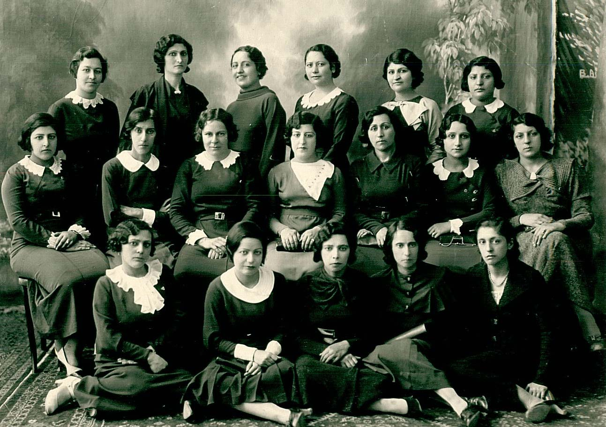
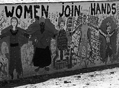
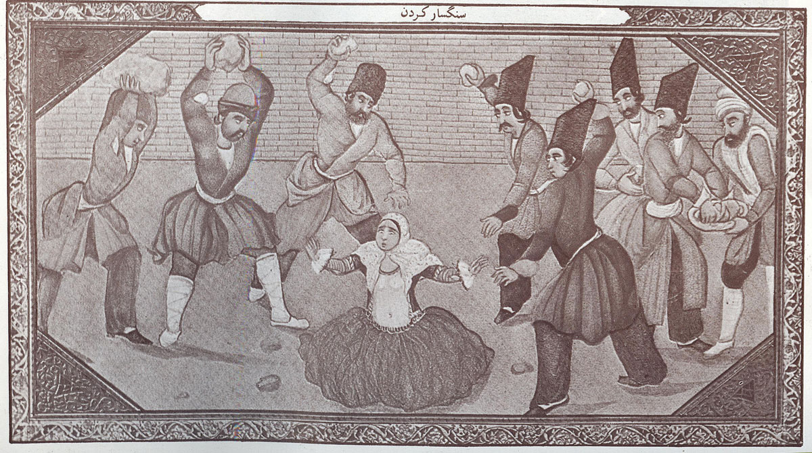
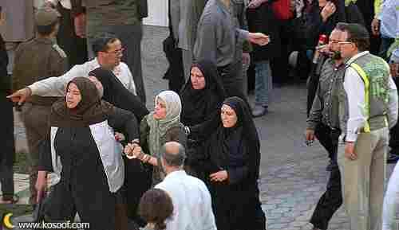
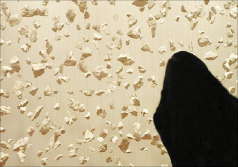
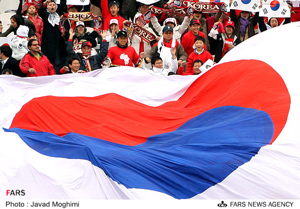

مقالههاى اين بخش
- 22 اسفند 1387

ویژه 8 مارس
مردمک
- 22 اسفند 1387

گزارش:
صدای امریکا
- 21 اسفند 1387

دلارام علی:
بامداد خبر
- 20 اسفند 1387

ویژه 8 مارس
رادیو زمانه
- 20 اسفند 1387

ویژه 8 مارس
یار دبستانی
- 20 اسفند 1387
ویژه 8 مارس
دویچه وله
- 18 اسفند 1387
گفت و گو با نگین سمبلی
رادیو زمانه
- 18 اسفند 1387
ویژه 8 مارس
ادوار نیوز
- 18 اسفند 1387

روز جهانی زن
اخبار روز
- 16 اسفند 1387

موج سوم فمینیسم در آلمان
دویچه وله
- 15 اسفند 1387

تنها داشتن یک ویژگی کافی است
دویچه وله
- 15 اسفند 1387

رجم
دفاع از بی دفاع
- 13 اسفند 1387

نگاه جنسیتی
دویچه وله
- 13 اسفند 1387

یک پرونده در عدلیه
رادیو زمانه
- 12 اسفند 1387
زنان ایرانی
کمیسیون زنان دفتر تجکیم وحدت
- 12 اسفند 1387

رييس شوراي فرهنگي اجتماعي زنان:
دویچه وله
- 10 اسفند 1387

یک روایت شخصی
رادیو زمانه
- 9 اسفند 1387
دختران ایرانی؛
میانه
- 8 اسفند 1387

در پی اعدام یک محکوم به سنگسار در ساری شکل گرفت
فرهنگ آشتی
- 8 اسفند 1387
قربانیان قانون
حوا
- 7 اسفند 1387
عبدالصمد خرمشاهي ساعاتي پيش از محاکمه شهلا جاهد :
روزآنلاین
- 6 اسفند 1387
سخنرانی دکتر مهرداد درویش پور دربرلین
تهیه
- 6 اسفند 1387

سخنرانی رضوان مقدم در برلین
تهیه
- 4 اسفند 1387

مصاحبه آ ب ث با شيرين عبادي
روزآنلاین
- 4 اسفند 1387

یک پرونده در عدلیه
رادیو زمانه
- 2 اسفند 1387
پیشبینی ناظران اجتماعی
مردمک
- 2 اسفند 1387

گزارشی درباره ناامنی اقتصادی در زندگی 17 میلیون زن خانهدار ایرانی
فرهنگ آشتی
- 2 اسفند 1387

آسمان به حال روسري سفيدها گريست!
میدان زنان
- 1 اسفند 1387

احکام صادره در شيراز در مصاحبه با غلامحسين رئيسي
روزآنلاین
- 30 بهمن 1387
گفت وگو با وکيل عاليه اقدام دوست
روزآنلاین
| ... | | | | | 1260 | | | | | ... |